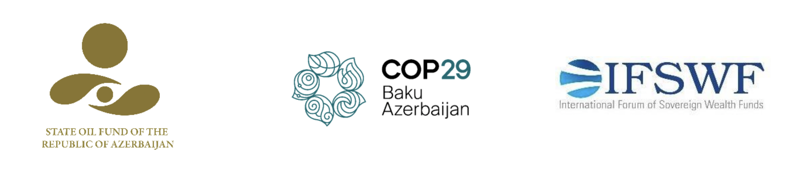

The Role of Sovereign Wealth Funds in Financing the Energy Transition
Panel discussion of the sovereign wealth funds’ representatives
Date: Thursday, 14 November 2024
Time: 11:00-12:30 (Baku, GMT+4)
Venue: Baku Stadium, Blue Zone, S3/Hirkan meeting room
Programme:
11:00 – 11:15 – Welcome Remarks:
- Israfil Mammadov, CEO of SOFAZ
- Obaid Amrane, Chair of IFSWF
11:15 – 12:10 – Panel Discussion
Moderator: Anne Simpson, Global Head of Sustainability, Franklin Templeton
Speakers:
- Bo LI, Deputy Managing Director, International Monetary Fund
- GUO Xiangjun, Executive Vice President, China Investment Corporation
- Derek Rozycki, Head of Responsible Investing, Mubadala Investment Company
- Steve Howard, Vice Chairman of Sustainability, Temasek Holdings
- Prasad Gadkari, Executive Director and Chief Strategy Officer, India’s National Infrastructure Fund
12:10 – 12:20 – Q&A Session
12:20 – 12:30 – Closing Remarks:
- Marina Silva, Minister of the Environment and Climate Change of Brazil